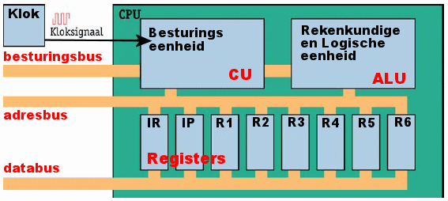

De cpu
<<<<<<< HEADDe cpu is
=======Een CPU (Central Processing Unit) is het centrale component van een computer dat instructies uitvoert en gegevens verwerkt. Het bevat rekenkernen, registers en cachegeheugen om taken snel en efficiënt te verwerken. CPU's worden gemeten in kloksnelheid (GHz) en zijn essentieel voor alle soorten computers, waaronder desktops, laptops en smartphones.
 >>>>>>> ac96339ee948ce96b8fb1d5a39b9e3e5231d1fce